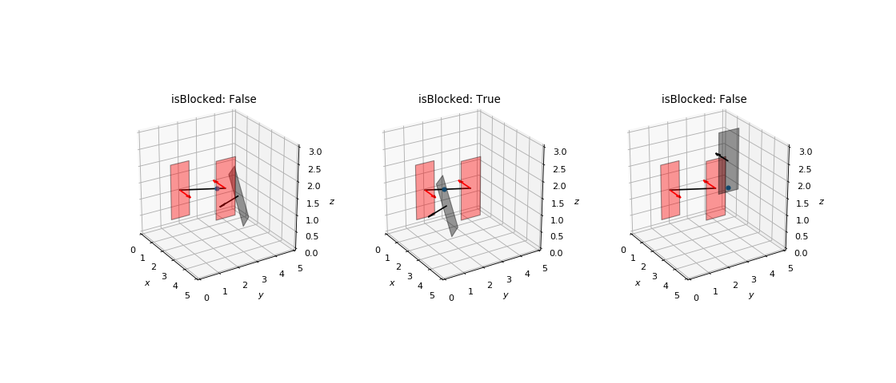

Check Blockage¶
-
owcsimpy.geoutils.cutils.checkBlockage(plane1, plane2, planeB, nargout=1)¶ To check whether two planes are blocked by another plane.
- Parameters
- plane1,plane2,planeB: SimplePlane
plane1 and plane2 are the tested planes that will be checked whether they are blocked by planeB. SimplePlane refers to a tuple of normalVect, ctrPoint, verts and area of a rectangular plane (see
RectPlane_py).- nargout: int (optional)
If nargout
- Returns
- isBlocked: bool
True denotes the blockage event occurs; otherwise, it returns False.
- intersectingPoint: ndarray(3,)
The intersecting point on the planeB.
Notes
The blocakge event is defined when the intersecting point of the line segment from/to plane1 to/from plane2 intersects planeB and the intersecting point is inside the convex hull of the planeB, and it lies between the line segment of plane1 and plane2.
Instead of using a convex hull, comparing the area of 4 triangles and the square is faster. The triangles are formed from the intersecting point and two vertices of the plane.
Examples
>>> import numpy as np >>> import matplotlib.pyplot as plt >>> >>> from owcsimpy.geoobjects.bases.rectplane_py import RectPlane_py as RectPlane >>> from owcsimpy.geoutils.draw import draw >>> from owcsimpy.geoobjects.bases.vector_py import Vector_py as Vector >>> from owcsimpy.geoutils.cutils import checkBlockage >>> >>> # Planes >>> planes = [] >>> >>> normalVect = Vector(np.array([1,np.deg2rad(90),np.deg2rad(0)]),which='spherical') >>> ctrPoint = np.array([0,2,1]) >>> planes.append(RectPlane(normalVect,ctrPoint=ctrPoint, >>> RodriguesAngle=np.deg2rad(0),dimensions=[1.7,1])) >>> >>> normalVect = Vector(np.array([1,np.deg2rad(90),np.deg2rad(180)]),which='spherical') >>> ctrPoint = np.array([4,2,2]) >>> planes.append(RectPlane(normalVect,ctrPoint=ctrPoint, >>> RodriguesAngle=np.deg2rad(0),dimensions=[1.7,1])) >>> >>> # This should not block >>> normalVect = Vector(np.array([1,np.deg2rad(115),np.deg2rad(222)]),which='spherical') >>> ctrPoint = np.array([2,4,1]) >>> planes.append(RectPlane(normalVect,ctrPoint=ctrPoint,RodriguesAngle=np.deg2rad(0),dimensions=[1.7,1])) >>> >>> # This should block >>> normalVect = Vector(np.array([1,np.deg2rad(115),np.deg2rad(222)]),which='spherical') >>> ctrPoint = np.array([2,2,1]) >>> planes.append(RectPlane(normalVect,ctrPoint=ctrPoint,RodriguesAngle=np.deg2rad(0),dimensions=[1.7,1])) >>> >>> # This should not block >>> normalVect = Vector(np.array([1,np.deg2rad(90),np.deg2rad(180)]),which='spherical') >>> ctrPoint = np.array([5,2,3]) >>> planes.append(RectPlane(normalVect,ctrPoint=ctrPoint,RodriguesAngle=np.deg2rad(0),dimensions=[1.7,1])) >>> >>> # Prepare canvases >>> fig,axs = draw(subplots=True,figsize=(14,6),nrows=1,ncols=3,xlim=[0,5],ylim=[0,5],zlim=[0,3], >>> azim=-32,elev=25) >>> >>> for idx in range(2,5): >>> colors = ['red','red','black'] >>> fig,axs[idx-2] = draw(figure=fig,axes=axs[idx-2],planes=[planes[0],planes[1],planes[idx]], >>> colors=colors,facecolors=colors) >>> >>> ray = np.append(planes[0].ctrPoint,planes[1].ctrPoint).reshape(2,-1) >>> >>> # Draw ray >>> axs[idx-2].plot(ray[:,0],ray[:,1],ray[:,2],color='k'); >>> >>> # Get simple planes from each plane >>> plane1 = planes[0].getSimplePlane() >>> plane2 = planes[1].getSimplePlane() >>> planeB = planes[idx].getSimplePlane() >>> >>> # Check whether the blockage occurs >>> isBlocked,intersectingPoint = checkBlockage(plane1,plane2,planeB,nargout=2) >>> >>> if intersectingPoint is not None: >>> xi,yi,zi = intersectingPoint >>> axs[idx-2].scatter(xi,yi,zi) >>> >>> axs[idx-2].set_title("isBlocked: {}".format(isBlocked)) >>> >>> plt.show()
